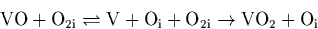

The results give strong support to the idea [141,90] that VOn complexes preferentially form during annealing of irradiated O-rich Si. The VO2 defect gives three IR active modes but only one has been detected. VO3 gives three high frequency LVMs which have all been detected. VnO complexes on the other hand give modes close to VO, i.e. around 830 cm-1. VO2 appears to have no connection with TDs [90] but may be a nucleus for oxygen precipitation.
One of the remaining questions is why [Oi] does not decrease when
VO anneals out at 350 and VO2 is formed. We originally
proposed this was due to oxygen dimers [99] complexing
with vacancies, and recent work by Londos et al
[79] seems to confirm this. The third, slow, formation
process for VO2 occurs while VO levels remain relatively static,
suggesting that this is not a VO transformation process. It is known
that vacancy aggregates exist in the material and frequently release
and re-trap isolated vacancies. It therefore seems likely that these
isolated vacancies in the structure are soaking up oxygen dimers.
Alternatively there could be a breakdown of VO centres as they trap
dimers, and the release of Oi through this mechanism roughly
balances the loss of Oi through trapping of Oi by VO centres.
and VO2 is formed. We originally
proposed this was due to oxygen dimers [99] complexing
with vacancies, and recent work by Londos et al
[79] seems to confirm this. The third, slow, formation
process for VO2 occurs while VO levels remain relatively static,
suggesting that this is not a VO transformation process. It is known
that vacancy aggregates exist in the material and frequently release
and re-trap isolated vacancies. It therefore seems likely that these
isolated vacancies in the structure are soaking up oxygen dimers.
Alternatively there could be a breakdown of VO centres as they trap
dimers, and the release of Oi through this mechanism roughly
balances the loss of Oi through trapping of Oi by VO centres.
Different treatments will place different emphasis on each reaction step, but it now seems that the following processes contribute to the breakdown of VO and the formation of VO2 (the numbering corresponding to the three regimes discussed in Section 5.1.2):
Processes such as
are unlikely due to the low concentration of VO centres as compared to other defects such as Oi. Note that unlike normal Cz-Si there will be a large number of Sii present in this material due to the irradiation. This complex behaviour of VO destruction and VO2 formation provides strong evidence for the presence of interstitial oxygen dimers in Cz-Si, since without them it is difficult to explain the observed reaction processes.
There is also some uncertainty about the formation kinetics of the VO3 defects. Corbett et al [141] pointed out that the growth of the VO3 bands was anomalously fast and required either a very non-uniform distribution of Oi or a diffusivity of VO2 higher than that of Oi. However more recent work by Lindström et al [90] states that the activation energy for the growth of VO3 is close to that of the diffusion of Oi, suggesting that Oi diffuses to immobile VO2. If Corbett is correct there could naturally be Oi present quite close to many of the VO2 centres. This could occur by

which could leave the Oi quite close to the VO2 centre. An alternative is that VO2 is breaking down to VO and then trapping a dimer before the VO can lose its second oxygen. The activation energy observed by Lindström is then actually the activation energy for the formation of the dimers in the first place, since once formed they can rapidly migrate to these VO centres. It seems a new study of the growth of VO3 is called for which should also include the effects of mobile dimers.
Finally we note that when Oi is complexed with a defect imposing tensile strain on the lattice, such as VO, N2 [100] or Cs [101], the Oi-related LVM is reduced from 1136 cm-1 to around 1000 cm-1. TDs also have modes in this region [102] and this suggests that they might consist of O atoms surrounding a core which gives rise to tensile strain. This need not be a vacancy, as many defects such as interstitial N2 pairs [103], Ci [104] and Sii [105] can also give dilated Si-Si bonds. This will be discussed further in Chapter 9.